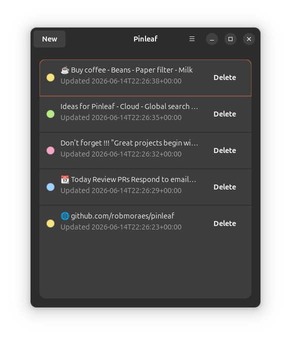
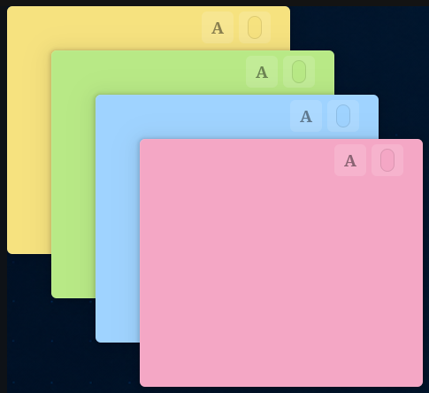
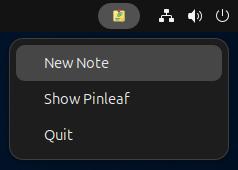
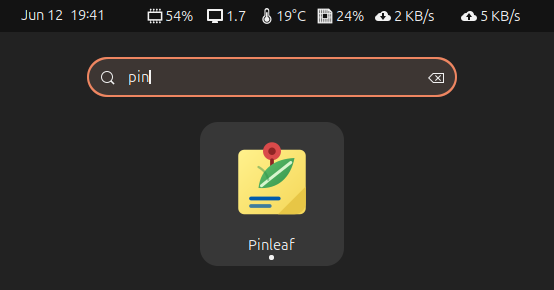

What it does
- Independent post-it-style note windows.
- Autosave and local SQLite persistence.
- Four note colors with curated bundled and system font choices.
- Main panel with previews of existing notes.
- AppIndicator menu for quick create, show and quit actions.
- Local Debian package installation with apt.
Screenshots




Install
Install a downloaded local Debian package:
sudo apt install ./pinleaf_*.debBuild a local Debian package from the repository root:
sudo apt install build-essential debhelper dpkg-dev
dpkg-buildpackage -us -uc
sudo apt install ../pinleaf_*.debRun from source with Ubuntu 24.04 system dependencies:
sudo apt install \
python3-gi \
gir1.2-gtk-4.0 \
gir1.2-adw-1 \
gir1.2-ayatanaappindicator3-0.1 \
libayatana-appindicator3-1git clone https://github.com/robmoraes/pinleaf.git
cd pinleaf
/usr/bin/python3 -m pinleafPinleaf stores notes locally under ~/.local/share/pinleaf. Package removal does not remove note data.
Development
Install the Ubuntu 24.04 system dependencies:
sudo apt install \
python3-gi \
gir1.2-gtk-4.0 \
gir1.2-adw-1 \
gir1.2-ayatanaappindicator3-0.1 \
libayatana-appindicator3-1Clone and run:
git clone https://github.com/robmoraes/pinleaf.git
cd pinleaf
/usr/bin/python3 -m pinleafInstall a user-local desktop launcher:
scripts/install-localCurrent status
Pinleaf is preparing v0.4.0 with local Debian package
installation. Known limitations include best-effort window positioning
and desktop-environment-specific AppIndicator behavior.
See known limitations for details.